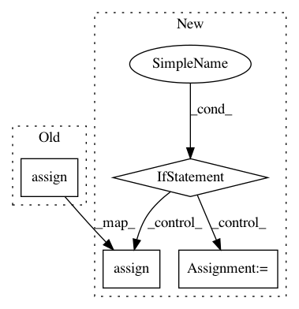

4671afa5049f7d3d7d1df76d02346bc6ac5166f7,sonnet/src/momentum.py,Momentum,apply,#Momentum#Any#Any#,61
Before Change
learning_rate = tf.cast(self.learning_rate, update.dtype.base_dtype)
momentum = tf.cast(self.momentum, update.dtype.base_dtype)
accumulated_momentum.assign((momentum * accumulated_momentum) + update)
if self.use_nesterov:
parameter.assign_sub(learning_rate * update +
learning_rate * momentum * accumulated_momentum)
else:
After Change
optimizer_utils.check_same_dtype(update, parameter)
lr = tf.cast(self.learning_rate, update.dtype.base_dtype)
mu = tf.cast(self.momentum, update.dtype.base_dtype)
if isinstance(update, tf.IndexedSlices):
update, indices = optimizer_utils.deduplicate_indexed_slices(
update.values, update.indices)
sparse_momentum_update = (mu * momentum.gather_nd(indices)) + update
momentum.scatter_nd_update(indices, sparse_momentum_update)
if self.use_nesterov:
parameter.scatter_nd_sub(
indices, (lr * update) + (lr * mu * sparse_momentum_update))
else:
parameter.scatter_nd_sub(indices, lr * sparse_momentum_update)
else:
momentum.assign((mu * momentum) + update)
if self.use_nesterov:
parameter.assign_sub((lr * update) + (lr * mu * momentum))
else:
parameter.assign_sub(lr * momentum)
class FastMomentum(base.Module):
SGD with Momentum module.
def __init__(self, learning_rate, momentum, use_nesterov=False, name=None):
In pattern: SUPERPATTERN
Frequency: 3
Non-data size: 4
Instances
Project Name: deepmind/sonnet
Commit Name: 4671afa5049f7d3d7d1df76d02346bc6ac5166f7
Time: 2019-07-03
Author: petebu@google.com
File Name: sonnet/src/momentum.py
Class Name: Momentum
Method Name: apply
Project Name: keras-team/keras
Commit Name: cc0e60c1012b7c72eeb5ea0c41b8a2045177ae5e
Time: 2016-07-19
Author: francois.chollet@gmail.com
File Name: keras/backend/tensorflow_backend.py
Class Name: Function
Method Name: __init__
Project Name: keras-team/keras
Commit Name: bc779df8b7b0745eedaaaca281728bbcea118e08
Time: 2016-08-08
Author: francois.chollet@gmail.com
File Name: keras/backend/tensorflow_backend.py
Class Name:
Method Name: batch_set_value